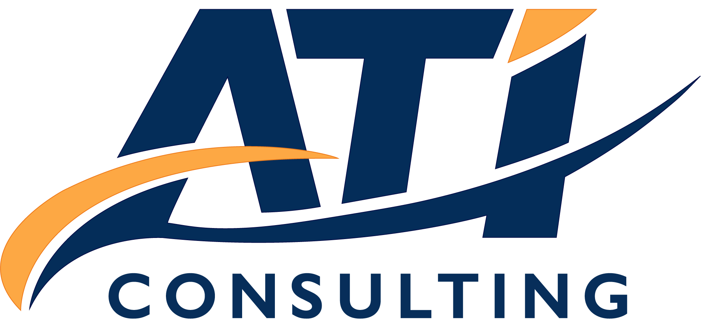

Partnering to Build a Stronger Organizational Culture – Together
ATI Consulting, LLC partners with organizations to build workplaces where leaders and teams feel supported, connected and empowered to grow. Together, we strengthen the behaviors and communication that shape culture—deepening trust, improving decision-making, and creating alignment at every level.
We bring a collaborative, roundtable approach to every engagement—creating space for honest conversation, shared learning, and meaningful progress. Through people strategy, leadership development, and organizational design, we help organizations build cultures where individuals thrive and teams perform at their best.
Because culture is the foundation of everything—retention, innovation, engagement, and results—we focus on helping your organization connect what matters most: people, purpose and performance. The result is a stronger, healthier workplace and sustainable business outcomes that create value for leaders, teams, and the communities you serve.
Angela T. Ingram, MBA
Principal Culture Consultant | Leadership & Engagement StrategistAngela T. Ingram is a respected culture and communication leader and former media executive with more than four decades of experience in communication, marketing and public engagement. She has guided high-performing teams and built trusted relationships with media decision-makers and stakeholder communities nationwide. Angela is recognized for designing award-winning engagement initiatives and creating platforms to empower leaders.
As Principal Culture Consultant at ATI Consulting, Angela partners with leaders and teams to strengthen culture through strategic communication, coaching, facilitation, leadership development and change management. She guides organizations to lead change with clarity, connection and purpose. Known for building trust and meaningful partnerships, she has led high-impact engagement initiatives, elevated executives, and cultivated collaborative networks across business, civic and nonprofit communities.
Angela earned a Master of Business Administration, a Master of Science in Business Communication with specializations in Organizational Leadership and Healthcare Management, and a Bachelor of Science in Communication, all from Spalding University. She is also the co-founder of the iServe Women’s Ministry, where she encourages women to grow in faith and use their spiritual gifts to glorify God, and facilitates a weekly virtual Bible Study with women across the U.S. She lives in the South Suburbs of Chicago with her husband, Mark.